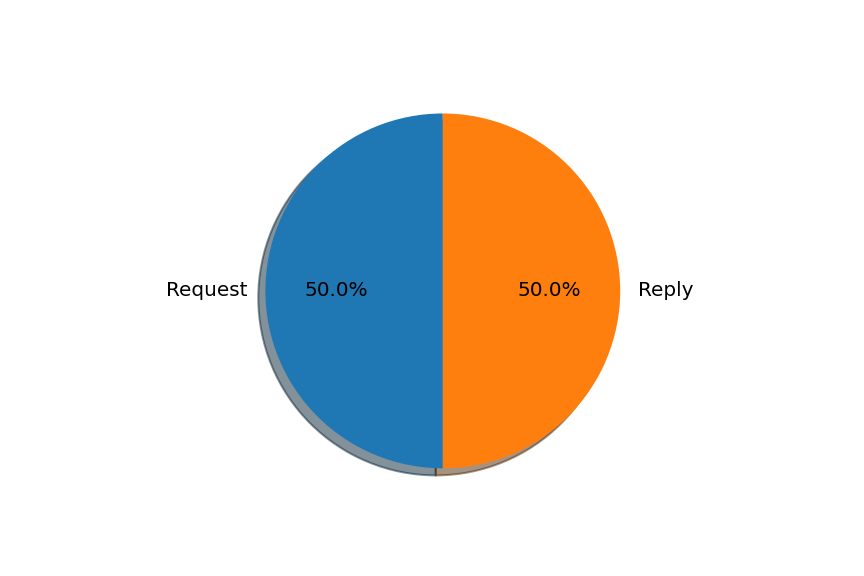

Nombre de flags [S] (SYN) = [2046]
Nombre de flag [.] (ACK) = [6961]

Nombre des requests et replys
Request = [42]Reply = [42]

Statistiques entre seq et windows et ack
Nombre de seq = [8201]Nombre de win = [10766]
Nombre de ack = [8768]
L’analyse de ces données m’a permis de savoir qu’il s’agit là d’une attaque DDoS car d'une part il y a non seulement une recurrence de demandes de connexion avec la même adresse source et au même moment, d'autre part nous sommes également censés être sur un réseau local où l'on n’a pas besoin de se connecter à distance, mais ici nous observons une demande de connexion à distance avec SSH, ce qui prouve qu’il s’agit d’un intrusion.